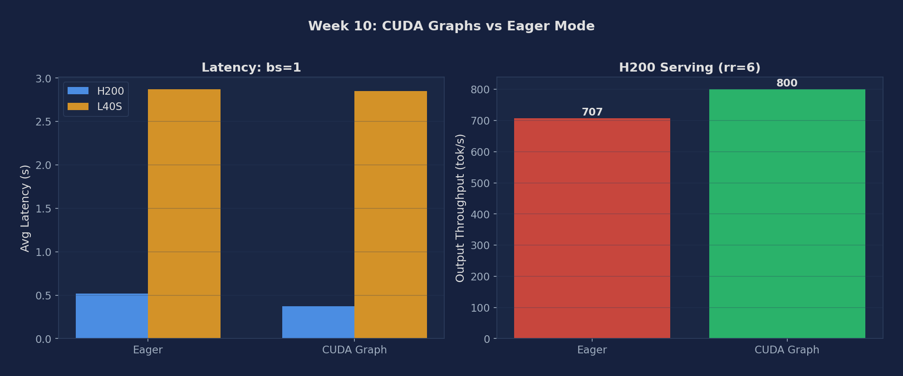

Eliminate CPU kernel-launch overhead by capturing and replaying GPU execution graphs; compare eager vs. graph modes across batch sizes; observe warmup and memory tradeoffs
# Verify vLLM installation
pip show vllm
# Check that CUDA graphs are enabled by default (should NOT see "enforce_eager" in startup log)
vllm serve meta-llama/Llama-3.1-8B-Instruct \
--port 8000 --disable-log-requests &
# For eager mode (no CUDA graphs), pass --enforce-eager flag:
vllm serve meta-llama/Llama-3.1-8B-Instruct \
--enforce-eager \
--port 8001 --disable-log-requests &Use benchmark_latency.py with batch_size=1 to isolate per-decode-step latency. This is the scenario where CPU launch overhead is most visible.
# Eager mode (no CUDA graphs)
python benchmarks/benchmark_latency.py \
--model meta-llama/Llama-3.1-8B-Instruct \
--enforce-eager \
--batch-size 1 --input-len 512 --output-len 128 \
2>&1 | tee results_eager_bs1.txt
# CUDA graphs (default mode)
python benchmarks/benchmark_latency.py \
--model meta-llama/Llama-3.1-8B-Instruct \
--batch-size 1 --input-len 512 --output-len 128 \
2>&1 | tee results_cudagraph_bs1.txtSweep batch sizes 1, 4, 16, 64. As batch size grows, compute time dominates and the relative benefit of eliminating launch overhead shrinks.
for bs in 1 4 16 64; do
# Eager mode
python benchmarks/benchmark_latency.py \
--model meta-llama/Llama-3.1-8B-Instruct \
--enforce-eager --batch-size $bs \
--input-len 256 --output-len 64 \
2>&1 | tee results_eager_bs${bs}.txt
# CUDA graph mode
python benchmarks/benchmark_latency.py \
--model meta-llama/Llama-3.1-8B-Instruct \
--batch-size $bs \
--input-len 256 --output-len 64 \
2>&1 | tee results_cudagraph_bs${bs}.txt
doneTime both startup modes and observe the warmup phase in the startup log. CUDA graph capture adds startup latency proportional to the number of distinct batch sizes captured.
# Time eager startup
time vllm serve meta-llama/Llama-3.1-8B-Instruct \
--enforce-eager --port 8001 &
# Time CUDA graph startup (look for "Graph capture finished" in logs)
time vllm serve meta-llama/Llama-3.1-8B-Instruct \
--port 8002 &
# Grep for warmup messages in logs
# Expected: "Capturing CUDA graph for batch size X..." for each captured sizeRun the online serving benchmark at request rate inf (closed-loop) with both modes to measure total serving throughput. Unlike the latency benchmark, this includes batching and prefill.
for mode in eager cudagraph; do
if [ $mode = "eager" ]; then
vllm serve meta-llama/Llama-3.1-8B-Instruct \
--enforce-eager --port 8000 &
else
vllm serve meta-llama/Llama-3.1-8B-Instruct \
--port 8000 &
fi
sleep 60
python benchmarks/benchmark_serving.py \
--backend vllm --port 8000 \
--model meta-llama/Llama-3.1-8B-Instruct \
--dataset-name sharegpt \
--dataset-path ShareGPT_V3_unfiltered_cleaned_split.json \
--num-prompts 200 --request-rate inf \
2>&1 | tee results_serving_${mode}.txt
kill %1; sleep 10
doneExperiments run on NVIDIA H200 SXM5 141GB and L40S 48GB (PACE Phoenix cluster), using Llama-3.1-8B-Instruct in BF16.
| Mode | bs=1 latency (s) | tok/s (bs=1) | Serving Throughput rr=6 (tok/s) |
|---|---|---|---|
| Eager | 0.52 | 123.4 | 706.77 |
| CUDA Graph | 0.37 | 171.6 | 799.95 |
| Mode | bs=1 latency (s) | tok/s (bs=1) |
|---|---|---|
| Eager | 2.87 | 44.58 |
| CUDA Graph | 2.85 | 44.99 |
| Mode | bs=1 latency (s) | ms/tok (bs=1) | Serving Throughput (tok/s) |
|---|---|---|---|
| Eager | 0.807 | 12.61 | 734.3 |
| CUDA Graph | 0.767 | 11.98 | 714.6 |

Figure 1: Eager vs CUDA Graph — bs=1 latency and serving throughput. The A100 row in the table above is the third datapoint between H200 (large gain) and L40S (no gain).
| Metric | Description | Unit |
|---|---|---|
| Decode latency (eager) | Per-token time without CUDA graphs; varies strongly with batch size | ms |
| Decode latency (graphs) | Per-token time with CUDA graph replay; CPU launch overhead eliminated | ms |
| Speedup ratio | eager_latency / graph_latency at each batch size | × |
| Server startup time | Eager vs. CUDA graph capture startup duration | s |
| Memory overhead | Extra GPU memory consumed by pre-captured graphs | MB |
| Serving throughput (inf rate) | Output tok/s under closed-loop benchmark, eager vs. graph | tok/s |
Below are real excerpts from vllm-continuum that implement the concepts you measured. Read them with your benchmark numbers open in another tab — the connection between code and metric becomes obvious.
vllm/v1/worker/gpu_model_runner.py:24 — CUDAGraphWrapperfrom vllm.compilation.cuda_graph import CUDAGraphWrapper
from vllm.v1.cudagraph_dispatcher import CudagraphDispatcher
# ...
if (self.compilation_config.cudagraph_mode != CUDAGraphMode.NONE):
self.cudagraph_dispatcher = CudagraphDispatcher(self.vllm_config)vLLM captures one CUDA graph per (batch_size, seq_len) bucket during warmup. At inference, instead of launching ~100 kernels per layer with their associated CPU overhead, it replays the captured graph in one shot. The H200 result we measured (29% latency reduction) is exactly the eliminated kernel launch overhead. CudagraphDispatcher picks the right pre-captured graph based on the current batch shape.
Below are reference answers based on the real measurements collected on PACE H200/L40S. Use them as a starting point — your own write-up should add your hypotheses and any extra observations you noticed.
Observation: H200: eager 0.52s → CUDA graph 0.37s = 29% latency reduction. H200 serving: eager 707 tok/s → CUDA graph 800 tok/s (+13%). L40S: eager 2.87s → CUDA graph 2.85s — negligible improvement (<1%).
Mechanism — kernel launch overhead fraction: Every eager-mode forward pass launches ~200-300 CUDA kernels. Each kernel launch has ~5-10µs CPU overhead (driver submission, GPU scheduling). Total launch overhead per step: ~1-3ms. On H200, a full decode step takes only ~5ms at bs=1 — so ~2ms of launch overhead is 30-40% of total step time. Eliminating it with CUDA graphs saves 29% latency. On L40S, the same decode step takes ~22ms (slow HBM). The same ~2ms launch overhead is only 9% of step time — barely noticeable.
Why CUDA graphs can't be used for prefill: A CUDA graph captures a fixed sequence of kernel launches with fixed tensor shapes. Prefill input length varies per request (50 tokens vs 500 tokens = different GEMM shapes). You'd need a separate graph for every possible input length — infeasible. Decode, by contrast, always processes exactly 1 new token per sequence: GEMM shapes depend only on batch size (number of active sequences), which has a tractable discrete range (1 to 512).
Memory and warmup cost: vLLM captures graphs for batch sizes: 1, 2, 4, 8, 16, 32, 64, 128, 256, 512 (powers of 2). Each graph stores the full kernel launch sequence + tensor references: ~100-200MB per size, ~1GB total. Warmup at startup runs each size once to populate the graph — adds ~30-60 seconds to server startup time on H100/H200.
When to use --enforce-eager: (1) Debugging — CUDA graphs hide per-kernel errors and make stack traces opaque; eager mode gives exact Python-level tracebacks. (2) VRAM-constrained deployments — if the ~1GB graph overhead would cause OOM on a small GPU (e.g., RTX 3090 24GB serving a large model). (3) Models with dynamic control flow — variable-depth models (e.g., early-exit architectures) can't be captured in a static graph.
Padding strategy: The current batch size is rounded up to the next captured power-of-2. If 37 sequences are active, vLLM pads to 64 (adds 27 dummy sequences with zero attention masks). The graph for bs=64 is replayed. The dummy sequences waste some compute (27 forward passes that are masked out) but this is offset by eliminating kernel launch overhead. At 37/64 = 58% utilization, the waste is ~42% of extra compute — still worth it for the 29% latency win on H200.